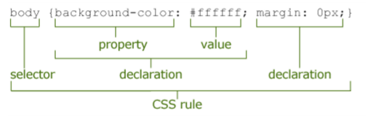

Katerina Tort, Devexperts
Даже если ночью в шкафу завернуться в одеяло и шепнуть «пост-цсс», то с верхней полки всё равно высунется Ситник и скажет, что есть плагин.
— Вадим Макеев (@pepelsbey) 7 ноября 2015Possible values are root, atrule, rule, decl, or comment.
html, body.home {
margin: 10px 20px;
}
{
type: 'root',
nodes: [
{
type: 'rule',
selectors: 'html, body.home',
nodes: [{
type: 'decl',
prop: 'margin',
value: '10px 20px'
}]
}
]
};
var postcss = require('postcss');
module.exports = postcss.plugin('PLUGIN_NAME', function (opts) {
opts = opts || {};
// Work with options here
return function (css, result) {
// Transform CSS AST here
};
});
module.exports = postcss.plugin('postcs-upside-down', function (opts) {
return function (css, result) {
css.walkRules(function(rule) {
rule.selector = rule.selector + ', .hello';
});
css.walkDecls(function(decl) {
if (decl.prop === 'width') {
var comment = postcss.comment({text: 'Upside down!'});
comment.source = decl.source; //for sourcemaps
decl.prop = 'height';
decl.parent.insertBefore(decl, comment);
}
});
};
});
console.log() //bad result.warn() //good!